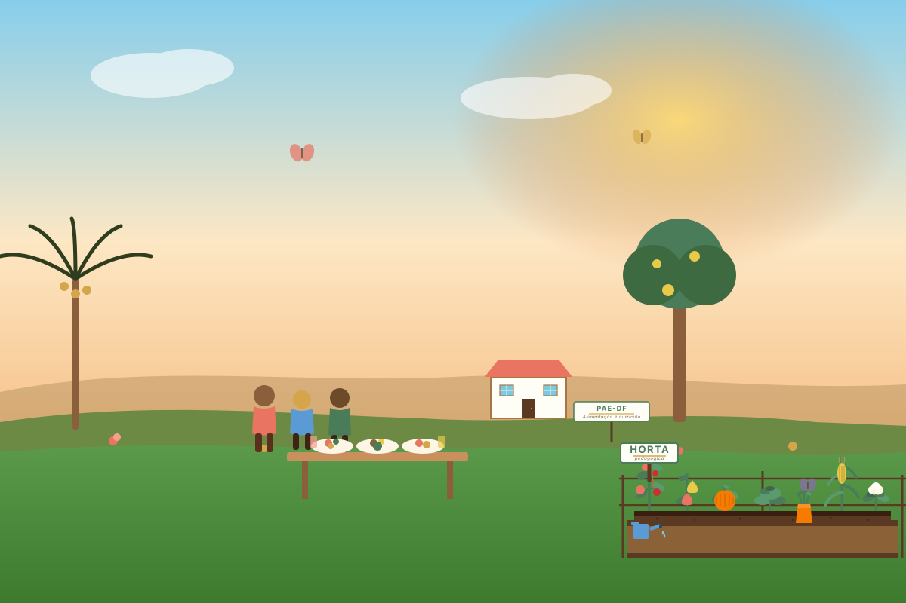

Marco
legal do PNAE
Alimentação escolar é direito, não favor. Conheça o arcabouço jurÃdico que sustenta cada refeição servida.

Setenta anos da alimentação escolar no Brasil.
Clique em cada data para ler o que mudou — da merenda higienista de 1955 à Resolução FNDE nº 4/2026.
Programa Nacional de Merenda Escolar ↗
Criado por decreto, o PNME nasce com caráter exclusivamente nutricional — distribuir alimentos para combater a desnutrição. Ainda não havia qualquer dimensão pedagógica atrelada à alimentação escolar.
Decreto nº 37.106/1955Constituição Federal ↗
A alimentação torna-se direito social no Art. 6º. O atendimento em creche e pré-escola (0 a 5 anos) vira dever do Estado no Art. 208. Pela primeira vez, a educação infantil está na Constituição.
CF/88 · Arts. 6º e 208LOSAN · Lei Orgânica de SAN ↗
Consolida o Direito Humano à Alimentação Adequada: alimentação saudável, acessÃvel, suficiente e culturalmente referenciada. A SAN passa a orientar todas as polÃticas alimentares do paÃs.
Lei nº 11.346/2006Lei 11.947 · marco regulatório ↗
Extende o PNAE a toda a educação básica. Define alimentação escolar como todo alimento oferecido no ambiente escolar durante o perÃodo letivo. A EAN vira componente curricular obrigatório. MÃnimo de 45% dos recursos em agricultura familiar.
Lei nº 11.947/2009Resolução FNDE nº 4 ↗
A edição mais recente do Manual de Cardápios: 45% em agricultura familiar, 85% do cardápio em alimentos in natura ou minimamente processados, máximo de 10% em ultraprocessados. Regra especial: bebês e crianças de 0 a 3 anos sem açúcar adicionado.
Res. FNDE nº 4/2026Quatro textos que você precisa conhecer.
Constituição Federal ↗
Alimentação como direito social fundamental. Creche e pré-escola para 0–5 anos como dever constitucional do Estado.
Acessar documento → Lei 11.947/2009Lei do PNAE
Alimentação escolar como todo alimento oferecido no perÃodo letivo. MÃnimo 45% em agricultura familiar.
Acessar documento → Res. FNDE nº 4/2026Manual de Cardápios
Regula composição por etapa. ProÃbe ultraprocessados. Define porções e referências nutricionais para a EI.
Acessar documento → DCNEI · Res. 5/2009Diretrizes da EI
Criança como sujeito histórico de direitos. Indissociabilidade do cuidar e educar — alimentação é pedagógica por lei.
Acessar documento →“Alimentação escolar é todo alimento oferecido no ambiente escolar durante o perÃodo letivo.â€�
Lei nº 11.947/2009 ↗